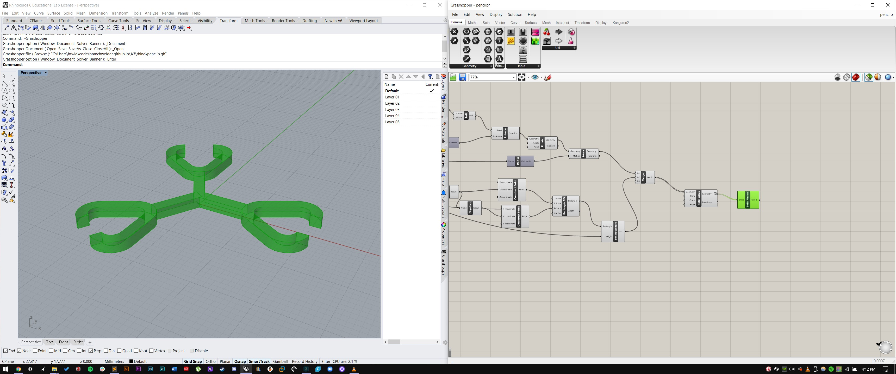
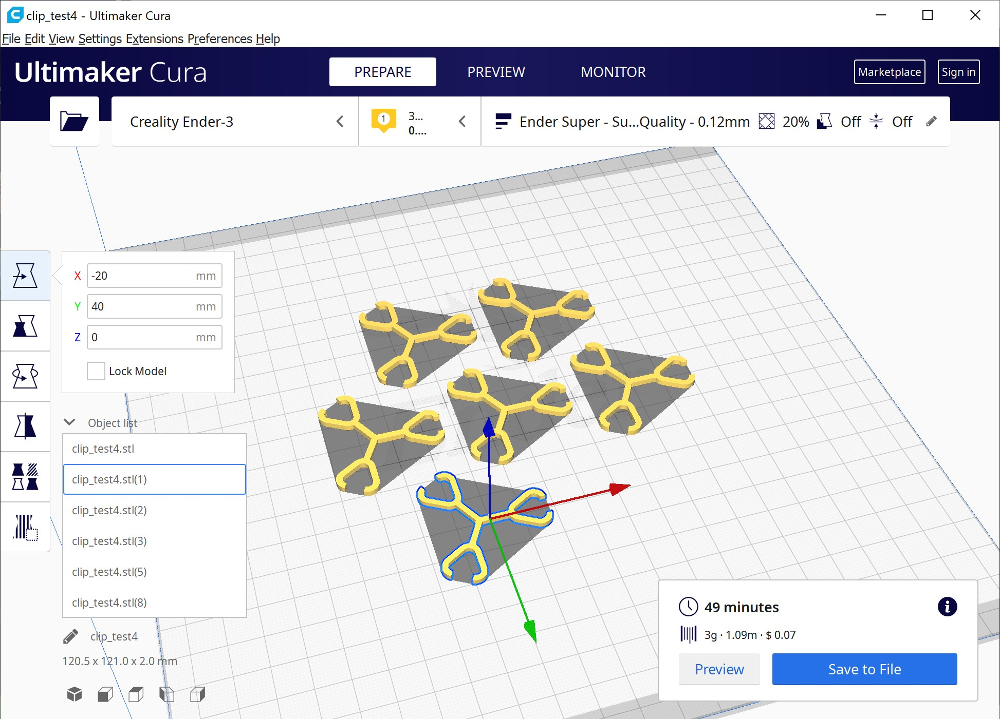

Grasshoper Fun Timez
Part I: Construction Kit
I created my clips to hold together Staedtler Triplus Fineliner pens. All of the geometry was created in Grasshopper. The clip size and thickness are parametric, so you could create a pen lattice with greater spacing between the pens, or perhaps less flexible clips. Here you can see a zoomed out version of my grasshopper definition and rhino file, also found here.
I sliced the models in cura. These are small, so I printed six of them at a time.

Here's the resulting clip:
This is how it holds pens together:
Here's a more complicated lattice contraption:

Here's a video of the satisfying click the pens make when they snap into place.
Here's a video of me shaking my contraption
Part II: Nested objects in Grasshopper
For my nested objects, I made pretty much every part of the definition parametric. You can change the wall and base thicknesses, wall height, the number of sides and size of the base polygon, the air gap between the nested objects, and the number of nested objects. Here is a screenshot of my grasshopper definition and the output in Rhino. The files are located here.
I sliced the file in Cura, changing a couple settings so that the small gap between each bowl had a tiny bit of support material in it. To do this, I had to change the default support air gap to zero.
I printed the file at low-quality settings because I don't care too much about quality. Here's the result:
Finally, I took nested bowls apart when they were done. If I really wanted to make litle bowls like these, I wouldn't print them in a nested state due to the requirement of supports and the effect that has on the surface quality. This probably wasn't the best example for a nested object - I was able to get the smallest bowl out but I broke the middle one when I was trying to get it out.
The little bowl can hold my printer's SD card :-)